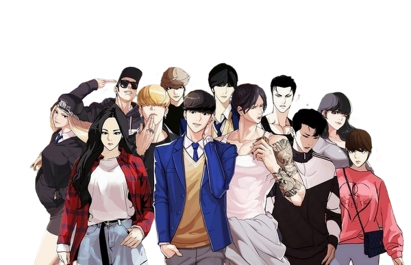

LOOKISM

.jfif)
Lookism is not only about physical appearance, but about how society unconsciously values people before understanding who they really are.
People experience appearance-based judgment daily, affecting confidence, opportunities, and social interactions.
Cases of discrimination related to physical appearance highlight how lookism affects social equality and personal opportunities.
This section explores how physical appearance influences judgment, opportunity, and mental well-being in everyday life.
Explore ProjectPeople are often judged based on looks before their personality or abilities are recognized.
→Social media and advertising shape unrealistic beauty standards that reinforce lookism.
→Constant comparison creates pressure, insecurity, and anxiety related to appearance.
↗Encouraging society to value individuals beyond physical appearance.
→An annual summary that summarizes my creative journey and development throughout the year.
Graphic Designer at Dewa-Dewi Tech, creating creative and functional visual designs.
UI/UX Designer at Odama Studio, creating intuitive and engaging digital experiences.
UX Researcher at Korsa Studio, connecting data and design.
Designing innovative experiences that connect technology and aesthetics.
Explore my portfolio full of creative solutions.

Without obsession for growth, I would never be able to push myself beyond my limits.
Every project is an opportunity to grow — both as a developer and as a person.